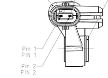

Датчик бокового удара (PAS) установлен в нижней части стойки B, по одному с левой и правой стороны; он представляет собой датчик ускорения, который при боковом столкновении способен распознавать Сигнал столкновения и передавать его на контроллер подушек безопасности.

| Номер контакта | Назначение контакта (Описание) | Тип сигнала | Диапазон сигнала | Условия проверки | Примечание |
| 1 | Сигнал | / | / | Замок зажигания ON, замыкание на массу кузова | Питание от контроллера подушек безопасности |
| 2 | Заземление | / | / | Замок зажигания ON, замыкание на массу кузова | Питание от контроллера подушек безопасности |
Контакты датчика столкновения делятся на положительный и отрицательный: контакт 1 является сигнальным выводом, а 2 — выводом заземления, их нельзя перепутать, иначе контроллер подушек безопасности не сможет завершить самопроверку.